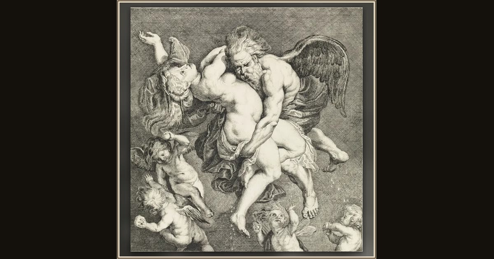

Boreas ontvoert Oreithyia
Philippe Lambert Joseph Spruyt, after painting by Peter Paul Rubens · 1747 - 1801 · rijksmuseum
The winged north wind Boreas seizes Oreithyia among flying putti, the abduction Phaedrus says the story places beside the Ilissus, where he and Socrates are walking. (229b) Explore its place in Plato's Dialogues, Phaedrus, section 11.